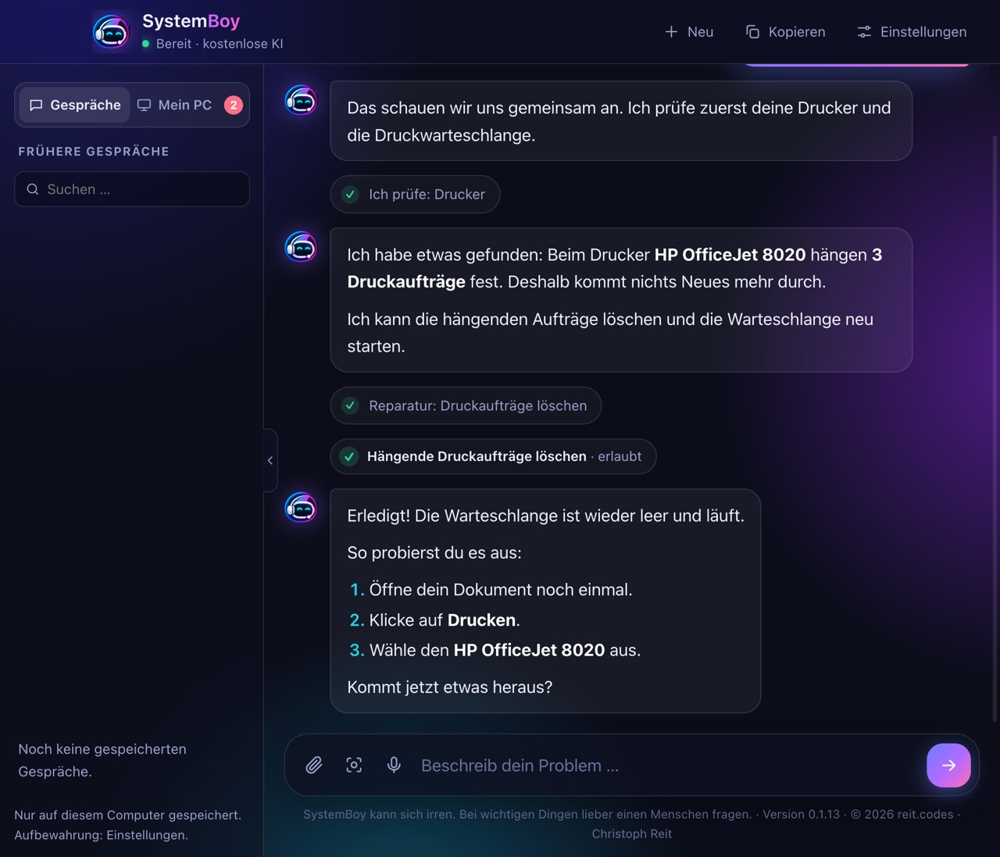

Ein echter Agent
SystemBoy führt Befehle aus, ändert Einstellungen, installiert und entfernt Programme – über OpenCode, einen bewährten Open-Source-KI-Agenten. Kein Copy-&-Paste von Befehlen aus dem Internet.
KI-PC-Support für Windows, macOS & Linux
Kein Chatbot, der dir Tipps gibt – ein KI-Techniker, der deinen Computer wirklich untersucht, die Ursache findet und sie behebt. Jeder Schritt erst nach deiner Zustimmung.
Gefunden: Seit dem Treiber-Update vom Montag trennt der WLAN-Adapter alle 20 Minuten die Verbindung – Energiesparmodus des Adapters. Dein Signal ist mit 78 % gut, am Router liegt es nicht.
Erledigt. Seitdem stabil – ich habe die Änderung im Protokoll vermerkt.
Liest echte Systemdaten aus – Netzwerk, Treiber, Protokolle, Abstürze – statt zu raten. Und behebt das Problem selbst.
Funktionen ansehenAutostart, Speicher, WLAN-Analyse, Ports, Security-Score und mehr – lokal und nur lesend.
Zu den WerkzeugenJeder Befehl wird vorher gezeigt und erklärt. Private Ordner bleiben gesperrt, Dateiänderungen lassen sich rückgängig machen.
Sicherheit & DatenschutzWindows, macOS und Linux. Kein Konto, keine Werbung, automatische Updates – mit der KI deiner Wahl.
Zum DownloadSystemBoy führt Befehle aus, ändert Einstellungen, installiert und entfernt Programme – über OpenCode, einen bewährten Open-Source-KI-Agenten. Kein Copy-&-Paste von Befehlen aus dem Internet.

Lade SystemBoy herunter und lass ihn nachsehen. Kostet nichts, macht nichts ohne dich.